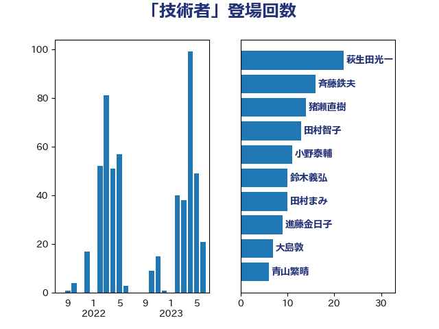

単語「技術者」

| 萩生田光一 | 自由民主党 | 22 回 |
| 斉藤鉄夫 | 公明党 | 16 回 |
| 猪瀬直樹 | 日本維新の会 | 14 回 |
| 田村智子 | 日本共産党 | 13 回 |
| 小野泰輔 | 日本維新の会 | 11 回 |
| 鈴木義弘 | 国民民主党 | 10 回 |
| 田村まみ | 国民民主党 | 10 回 |
| 進藤金日子 | 自由民主党 | 9 回 |
| 大島敦 | 立憲民主党 | 7 回 |
| 青山繁晴 | 自由民主党 | 6 回 |
| 西村康稔 | 自由民主党 | 6 回 |
| 竹詰仁 | 国民民主党 | 6 回 |
| 空本誠喜 | 日本維新の会 | 6 回 |
| 礒崎哲史 | 国民民主党 | 6 回 |
| 岩本剛人 | 自由民主党 | 6 回 |
| 和田有一朗 | 日本維新の会 | 6 回 |
| 藤巻健太 | 日本維新の会 | 5 回 |
| 佐藤正久 | 自由民主党 | 5 回 |
| 三浦信祐 | 公明党 | 5 回 |
| 辻元清美 | 立憲民主党 | 4 回 |
| 輿水恵一 | 公明党 | 4 回 |
| 石井章 | 日本維新の会 | 4 回 |
| 河野義博 | 公明党 | 4 回 |
| 森本真治 | 立憲民主党 | 4 回 |
| 梅村みずほ | 日本維新の会 | 4 回 |
| 末松義規 | 立憲民主党 | 4 回 |
| 岸田文雄 | 自由民主党 | 4 回 |
| 太栄志 | 立憲民主党 | 4 回 |
| 古川康 | 自由民主党 | 4 回 |
| 五十嵐清 | 自由民主党 | 4 回 |
| 高橋千鶴子 | 日本共産党 | 3 回 |
| 高橋光男 | 公明党 | 3 回 |
| 長坂康正 | 自由民主党 | 3 回 |
| 野村哲郎 | 自由民主党 | 3 回 |
| 足立敏之 | 自由民主党 | 3 回 |
| 羽田次郎 | 立憲民主党 | 3 回 |
| 緑川貴士 | 立憲民主党 | 3 回 |
| 神津たけし | 立憲民主党 | 3 回 |
| 浜野喜史 | 国民民主党 | 3 回 |
| 浅野哲 | 国民民主党 | 3 回 |
| 河西宏一 | 公明党 | 3 回 |
| 永岡桂子 | 自由民主党 | 3 回 |
| 永井学 | 自由民主党 | 3 回 |
| 森田俊和 | 立憲民主党 | 3 回 |
| 末松信介 | 自由民主党 | 3 回 |
| 平林晃 | 公明党 | 3 回 |
| 川崎ひでと | 自由民主党 | 3 回 |
| 山崎正恭 | 公明党 | 3 回 |
| 小宮山泰子 | 立憲民主党 | 3 回 |
| 天畠大輔 | れいわ新選組 | 3 回 |
| 大串正樹 | 自由民主党 | 3 回 |
| 伊藤渉 | 公明党 | 3 回 |
| 伊藤俊輔 | 立憲民主党 | 3 回 |
| 上田清司 | 国民民主党 | 3 回 |
| 一谷勇一郎 | 日本維新の会 | 3 回 |
| 高市早苗 | 自由民主党 | 2 回 |
| 馬場雄基 | 立憲民主党 | 2 回 |
| 鈴木敦 | 国民民主党 | 2 回 |
| 野田聖子 | 自由民主党 | 2 回 |
| 西野太亮 | 自由民主党 | 2 回 |
| 荒井優 | 立憲民主党 | 2 回 |
| 牧野たかお | 自由民主党 | 2 回 |
| 清水真人 | 自由民主党 | 2 回 |
| 池田佳隆 | 自由民主党 | 2 回 |
| 櫻田義孝 | 自由民主党 | 2 回 |
| 梅谷守 | 立憲民主党 | 2 回 |
| 柳ヶ瀬裕文 | 日本維新の会 | 2 回 |
| 東国幹 | 自由民主党 | 2 回 |
| 早坂敦 | 日本維新の会 | 2 回 |
| 平山佐知子 | 無所属 | 2 回 |
| 岡田直樹 | 自由民主党 | 2 回 |
| 山本香苗 | 公明党 | 2 回 |
| 小沼巧 | 立憲民主党 | 2 回 |
| 小林鷹之 | 自由民主党 | 2 回 |
| 宮崎雅夫 | 自由民主党 | 2 回 |
| 大塚耕平 | 国民民主党 | 2 回 |
| 吉田統彦 | 立憲民主党 | 2 回 |
| 吉田宣弘 | 公明党 | 2 回 |
| 勝目康 | 自由民主党 | 2 回 |
| 加藤勝信 | 自由民主党 | 2 回 |
| 伊藤岳 | 日本共産党 | 2 回 |
| 中谷一馬 | 立憲民主党 | 2 回 |
| 中川宏昌 | 公明党 | 2 回 |
| 中山展宏 | 自由民主党 | 2 回 |
| 上野通子 | 自由民主党 | 2 回 |
| 上田勇 | 公明党 | 2 回 |
| 高木かおり | 日本維新の会 | 1 回 |
| 馬淵澄夫 | 立憲民主党 | 1 回 |
| 音喜多駿 | 日本維新の会 | 1 回 |
| 青木愛 | 立憲民主党 | 1 回 |
| 階猛 | 立憲民主党 | 1 回 |
| 鈴木英敬 | 自由民主党 | 1 回 |
| 鈴木俊一 | 自由民主党 | 1 回 |
| 重徳和彦 | 立憲民主党 | 1 回 |
| 遠藤良太 | 日本維新の会 | 1 回 |
| 西田実仁 | 公明党 | 1 回 |
| 西岡秀子 | 国民民主党 | 1 回 |
| 落合貴之 | 立憲民主党 | 1 回 |
| 菅義偉 | 自由民主党 | 1 回 |
| 自見はなこ | 自由民主党 | 1 回 |
| 篠原孝 | 立憲民主党 | 1 回 |
| 福島伸享 | 無所属 | 1 回 |
| 福島みずほ | 社会民主党 | 1 回 |
| 福山哲郎 | 立憲民主党 | 1 回 |
| 神谷政幸 | 自由民主党 | 1 回 |
| 石原宏高 | 自由民主党 | 1 回 |
| 畦元将吾 | 自由民主党 | 1 回 |
| 田嶋要 | 立憲民主党 | 1 回 |
| 片山さつき | 自由民主党 | 1 回 |
| 浜地雅一 | 公明党 | 1 回 |
| 津島淳 | 自由民主党 | 1 回 |
| 梅村聡 | 日本維新の会 | 1 回 |
| 枝野幸男 | 立憲民主党 | 1 回 |
| 林芳正 | 自由民主党 | 1 回 |
| 松川るい | 自由民主党 | 1 回 |
| 杉尾秀哉 | 立憲民主党 | 1 回 |
| 本村伸子 | 日本共産党 | 1 回 |
| 有村治子 | 自由民主党 | 1 回 |
| 斎藤アレックス | 国民民主党 | 1 回 |
| 掘井健智 | 日本維新の会 | 1 回 |
| 後藤茂之 | 自由民主党 | 1 回 |
| 庄子賢一 | 公明党 | 1 回 |
| 平将明 | 自由民主党 | 1 回 |
| 川田龍平 | 立憲民主党 | 1 回 |
| 岸真紀子 | 立憲民主党 | 1 回 |
| 岩渕友 | 日本共産党 | 1 回 |
| 岡本あき子 | 立憲民主党 | 1 回 |
| 山際大志郎 | 自由民主党 | 1 回 |
| 山本左近 | 自由民主党 | 1 回 |
| 山本剛正 | 日本維新の会 | 1 回 |
| 尾身朝子 | 自由民主党 | 1 回 |
| 室井邦彦 | 日本維新の会 | 1 回 |
| 宗清皇一 | 自由民主党 | 1 回 |
| 塩村あやか | 立憲民主党 | 1 回 |
| 堤かなめ | 立憲民主党 | 1 回 |
| 國重徹 | 公明党 | 1 回 |
| 國場幸之助 | 自由民主党 | 1 回 |
| 古賀友一郎 | 自由民主党 | 1 回 |
| 八木哲也 | 自由民主党 | 1 回 |
| 住吉寛紀 | 日本維新の会 | 1 回 |
| 中村裕之 | 自由民主党 | 1 回 |
| 中川郁子 | 自由民主党 | 1 回 |
| 世耕弘成 | 自由民主党 | 1 回 |
| 三木圭恵 | 日本維新の会 | 1 回 |